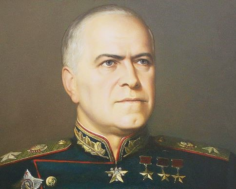

Георгий Константинович Жуков - четырежды Герой Советского Союза

Георгий Константинович Жуков родился 1 декабря 1896 года в деревне Стрелковка Калужской губернии в бедной крестьянской семье. Отец - Константин Артемьевич, мать - Устинья Артемьевна. В 11 лет Георгий окончил церковно-приходскую школу и был отправлен в Москву учиться скорняжному делу.

В 1915 году Жуков был призван в армию и зачислен в кавалерию. Участвовал в Первой мировой войне, был дважды награжден Георгиевским крестом за захват немецкого офицера и тяжелое ранение.
После революции Жуков вступил в Красную армию. Гражданскую войну он прошел командиром эскадрона, участвовал в боях с армиями Колчака и Врангеля.
"Я всю жизнь учился. Воевал, учился, снова воевал. Военное дело требует постоянного совершенствования."
В межвоенный период Жуков быстро рос по службе: командовал кавалерийской дивизией, затем корпусом. В 1939 году ему было поручено командование советскими войсками в боях с японцами на реке Халхин-Гол.
В мае-сентябре 1939 года под командованием Жукова советско-монгольские войска окружили и разгромили 6-ю японскую армию. Эта операция стала первой в военной истории, где было применено глубокое наступление с использованием танковых корпусов.

За победу на Халхин-Голе Жукову было присвоено звание Героя Советского Союза. Япония после этого поражения отказалась от планов нападения на СССР.
С первых дней войны Жуков находился на самых ответственных участках фронта:
Июль 1941 - организовал контрудар под Ельней, первую успешную наступательную операцию Красной армии.
Сентябрь 1941 - январь 1942 - командовал Ленинградским фронтом, сорвал планы немецкого командования по захвату города.
Октябрь 1941 - январь 1942 - командующий Западным фронтом в битве за Москву. Именно под его руководством было организовано знаменитое контрнаступление под Москвой.
"Войска Западного фронта! Враг рвется к сердцу нашей Родины - Москве. За нами Москва! Отступать некуда!"
В 1942 году Жуков как представитель Ставки Верховного Главнокомандования координировал действия фронтов в Сталинградской битве. Именно он предложил план операции "Уран" по окружению 6-й армии Паулюса.

В 1943 году Жуков руководил подготовкой и проведением Курской битвы - крупнейшего танкового сражения в истории. После Курской дуги стратегическая инициатива окончательно перешла к Красной армии.
В 1944-1945 годах Жуков координировал действия 1-го Белорусского фронта в операции "Багратион" по освобождению Белоруссии, затем руководил Висло-Одерской операцией.
Апогеем военной карьеры Жукова стала Берлинская операция. 16 апреля 1945 года начался штурм Берлина. 2 мая 1945 года берлинский гарнизон капитулировал.
8 мая 1945 года в Карлсхорсте (пригород Берлина) Жуков от имени СССР принял капитуляцию фашистской Германии.

24 июня 1945 года на Красной площади состоялся исторический Парад Победы, который принимал Маршал Жуков. Это был триумф советского народа и лично Георгия Константиновича.
После войны Жуков занимал высокие посты: Главнокомандующий сухопутными войсками, министр обороны СССР. Однако в 1957 году был обвинен в "бонапартизме" и отправлен в отставку.
Последние годы жизни Жуков посвятил написанию мемуаров "Воспоминания и размышления", которые стали бестселлером военной литературы.
Умер Георгий Константинович Жуков 18 июня 1974 года. Похоронен у Кремлевской стены.